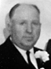
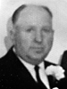
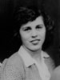

Archie Earl and Florene Davis Buchanan Family
Home
Histories
Charts
Photos
Maps
Restricted
News
Info
Contact
|


  |
Forrest "D" Buchanan 7 Mar. 1918 - 28 Feb. 1980 Married Arvilla Jacobson  26 Jan. 1950 26 Jan. 1950
The 1st child of Archie Earl Buchanan and Florene Davis |
 12 12 |
Maxine Buchanan 15 July 1919 - 29 March 2008 Married Ernest Dewey Hansen 7 May 1942 Married Micah Oleen Garn 14 June 1959 The 2nd child of Archie Earl Buchanan and Florene Davis |
|  | Belle Buchanan 11 Dec. 1922 - 16 July 1993 Married Richard Lott Molloy 21 Feb. 1946 The 4th child of Archie Earl Buchanan and Florene Davis |
| Other Children (still living) | Deane Buchanan Gloria Buchanan Jerry "W" Buchanan David Earl Buchanan |
Back to Buchanan Family History web pages.